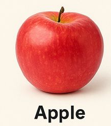
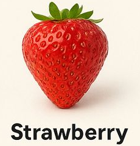
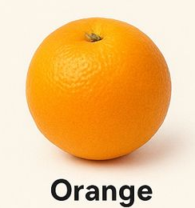
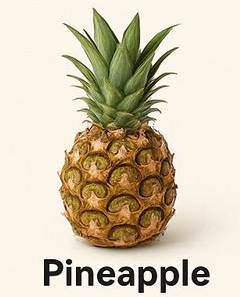
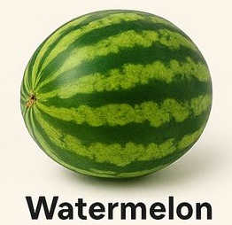
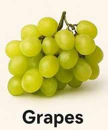
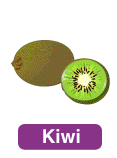
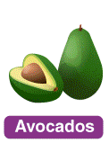

Apple
Crisp, juicy fruit with a sweet-to-tart flavor depending on the variety (e.g., Granny Smith is tart, Fuji is very sweet). Skin can be red, green, or yellow. Eaten fresh, baked into pies, or made into cider and applesauce.
Banana

Soft, creamy flesh with a sweet, slightly starchy taste. Bright yellow when ripe (green when unripe). Naturally packaged in its own peel. Eaten raw, blended into smoothies, or baked into bread.
Mango
Known as the “king of fruits.” Juicy, sweet, and slightly tangy with a rich tropical flavor. Flesh is bright orange-yellow and fibrous. Can be eaten fresh, in salsas, smoothies, or dried.
Strawberry
Small, heart-shaped red berries with tiny seeds on the surface. Sweet and slightly tart, very juicy and fragrant. Perfect fresh, in desserts, jams, or chocolate-dipped.
Orange
Citrus fruit with bright orange, segmented flesh that’s juicy and sweet-tart. Thick peel is often zested. Eaten fresh, juiced, or used in marmalades and desserts.
PineApple
Tropical fruit with tough spiky skin and sweet, tangy, juicy yellow flesh. Has a distinctive tropical flavor with a slight acidity. Eaten fresh, grilled, in upside-down cake, or in piña coladas.
Watermelon
Large fruit with thick green rind and red (or yellow) juicy, crisp flesh filled with black seeds (or seedless varieties). Very sweet and ultra-refreshing, especially cold. Mostly water (~92%), perfect for summer.
Grape
Small round berries that grow in clusters. Can be green, red, or purple/black. Sweet and juicy with a thin skin. Eaten fresh, dried as raisins, or fermented into wine.
Kiwi
Small oval fruit with fuzzy brown skin and bright green flesh speckled with tiny black edible seeds. Sweet-tart flavor, similar to a mix of strawberry, banana, and pineapple. Eaten scooped out or peeled.
Avocado
Botanically a large berry (yes, it’s a fruit!). Creamy, buttery green flesh with a mild, nutty taste. Large pit in the center. Not sweet — used in savory dishes like guacamole, salads, and toast.